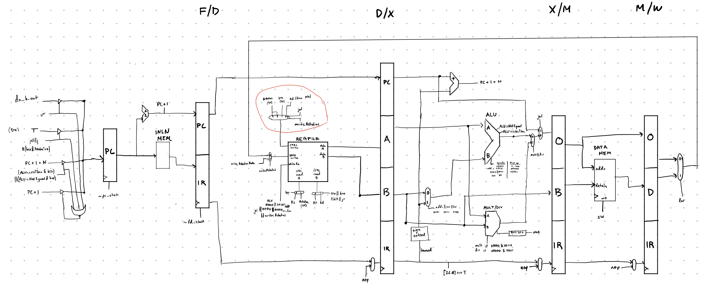
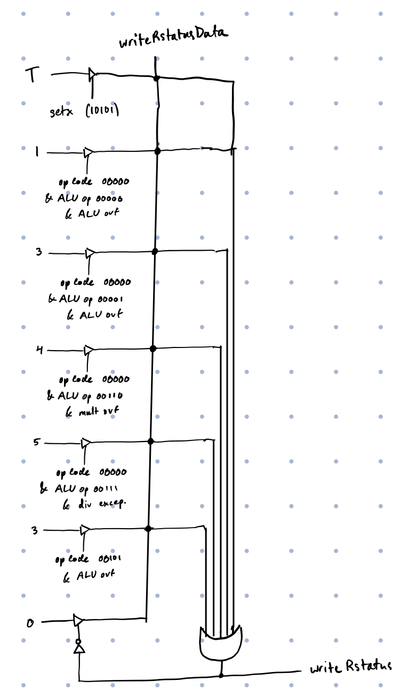

Custom 32-Bit Pipelined CPU


→ scroll to see more →
Overview
A semester-long project building a fully functional 32-bit processor from the ground up — starting from fundamental logic gates. Every module was constructed at the gate level. No behavioral shortcuts.
The CPU
- Designed in structural Verilog from fundamental gates (AND, OR, NOT, XOR); every multiplexer, adder, shifter, and register file built from scratch
- 5-stage pipeline: Fetch, Decode, Execute, Memory, Writeback
- Custom ISA supporting 17 instructions: arithmetic (add, sub, mul, div), logic (and, or, sll, sra), memory (lw, sw), and control flow (j, jal, jr, bne, blt, bex, setx)
- Prioritized data forwarding / bypass paths using cascaded multiplexer trees to resolve data hazards without stalling
- Load-use hazard detection with single-cycle stall insertion
- Multi-cycle multiply/divide with pipeline hold logic
- Branch and jump flush mechanisms for control hazards
- Arithmetic exception detection with automatic rstatus register updates